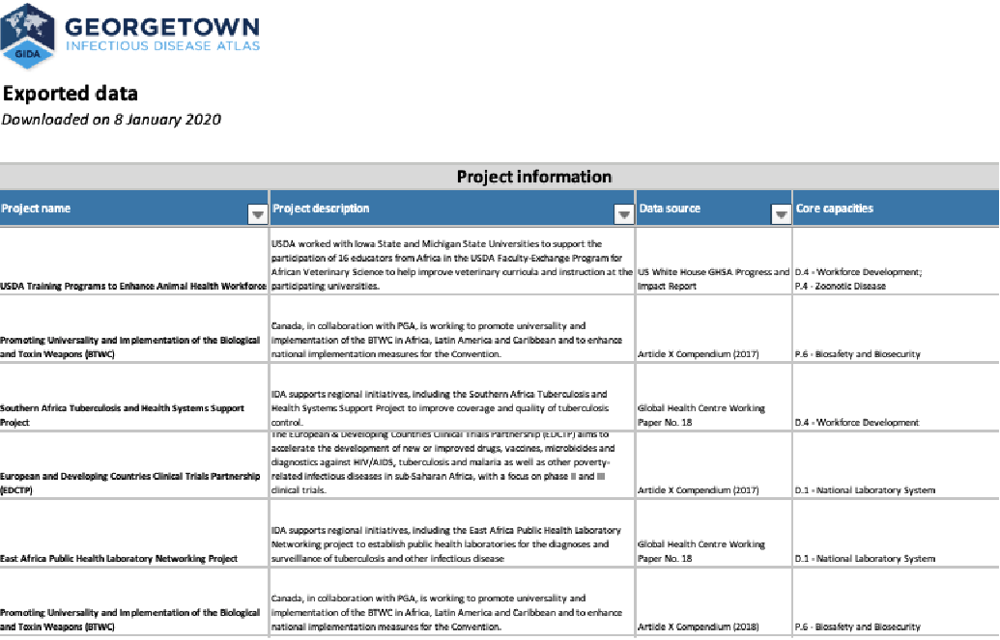

Built by
The GEORGETOWN INFECTIOUS DISEASE ATLAS is an integrated research platform providing access to a comprehensive set of global health security visualization dashboards, decision support tools, and data libraries developed by the Center for Global Health Science and Security at Georgetown University. See below for a description of each tool, links to the sites, and access to a quick download of the data from each.
WEBSITES AND TOOLS
The COVID Analysis and Mapping of Policies (AMP) visualization tool is a comprehensive database of policies and plans to address the COVID-19 pandemic. Decision-makers can use COVID AMP’s user-friendly interface to easily identify effective policies and plans to reduce the impacts of the COVID-19 pandemic.
COVID AMP is part of the COVID-Local suite of free resources developed for local decision-makers who are working to keep their communities safe during the COVID-19 pandemic. The COVID AMP library includes policies and plans published by subnational governments or private and non-profit organizations, in addition to those released by national governments.
The Global Health Security Tracking tool is an integrated mapping and data visualization platform showing the flow of international funding for global health security from funder to recipient globally. The tool tracks funding targeted to improve health security core capacities, funds for outbreak response, and health security metrics.
Key citation: Katz R, Graeden E, Kerr J, Eaneff S. (2019). Tracking
the flow of funds in global health security. EcoHealth. 1-8. DOI:
10.1007/s10393-019-01402-w.
Bioscenarios is a rapid visualization tool demonstrating the diversity in biological outbreak scenarios, each coded by 12 characteristics and ranked by relative likelihood to cause fatalities in humans and animals.
Key citation: Katz R, Graeden E, Kerr J. (2018). The complexity of
biological events. The Lancet Global Health. 6-2: 136-137. DOI:
10.1016/S2214-109X(17)30494-1.
Deliberate Biological Event (DBE) Tool is an interactive teaching tool that aligns policies with the stakeholders mandated or authorized to act in responding to a deliberate biological outbreak (e.g., bioterror or state-sponsored attack), including a static visualization of how nations can request assistance for such events. Each policy is associated with when during an outbreak it is triggered and the responsibilities associated with organizations from different sectors affected by the policy in response to a DBE.
Key citation: Katz R, Graeden E, Abe K, Attal-Juncqua A, Boyce M,
Eaneff S. (2018). Mapping stakeholder and policies in response to
deliberate biological events. Heliyon. 4(12): e01091. DOI:
10.1016/j.heliyon.2018.e01091.
The IHR Costing Tool helps users generate and review cost estimates to support practical planning for sustainable capacity development to prevent, detect, and respond to public health threats, as defined by the International Health Regulations (IHR). This tool provides a framework to calculate costs for implementing and enhancing IHR core capacities. Costs are estimated by applying country-specific user input data to cost calculations developed using best practices for achieving the technical standards specified in the Joint External Evaluation Tool (JEE).
Key citation: Katz R, Graeden E, Eaneff S, Kerr J. Strengthening
health security- an intuitive and user friendly tool to estimate
country level costs. BMJ Glob Health 2018;3:e000864. DOI:
10.1136/bmjgh-2018-000864.
The Integrated NTD (Neglected Tropical Diseases) Tool is a web-based decision support tool to aid policy makers in decisions regarding the benefits of integrating malaria and schistosomiasis control programs. The user interface translates epidemiological parameters into easily interpretable recommendations.
Key citation: Standley CJ, Graeden E, Kerr J, Sorrell EM, Katz R.
Decision support for evidence-based integration of disease control:
A proof of concept for malaria and schistosomiasis. PLOS Neglected
Tropical Diseases, 2018; 12 (4): e0006328. DOI:
10.1371/journal.pntd.0006328
OTHER HEALTH SECURITY DATASETS

SPAR DATA
We have collated all publicly available self-assessment
measurements of International Health Regulations capacity
implementation status from 2010 through 2017. These data are now
organized by a comprehensive data structure with International
Standard country codes and ready access to all longitudinal data
in a single table.
PVS SCORE DATA
The World Organisation for Animal Health (OIE) developed the
Performance of Veterinary Services (PVS) Pathway as a
capacity-building platform for the sustainable improvement of
national Veterinary Services. This tool enables national
veterinary authorities to understand their strengths and
weaknesses using a globally consistent methodology based on
international standards. We have translated the publicly available
PVS levels of advancement (i.e., scores) into a searchable
spreadsheet; scores range from 1 to 5, with 5 being the optimum
designation. These data have also been incorporated into the
Global Health Security Tracking tool.
Key citation: World Organisation for Animal Health website. OIE
PVS Pathway: PVS Evaluation Reports.
https://www.oie.int/solidarity/pvs-evaluations/pvs-evaluation-reports/
DONS DATA
We have migrated several decades of WHO’s prose reports of Disease
Outbreak News (DONs) into a searchable spreadsheet. These data are
now organized by a comprehensive data structure for consistent
naming conventions for countries, outbreaks, type of disease
event, and standard outbreak measures. The structured data are
available for download.
RAPID URBAN HEALTH SECURITY ASSESSMENT (RUHSA) TOOL
The RUHSA Tool is intended to be a voluntary, collaborative, and
multisectoral resource for mayors and municipal public health
authorities to self-assess municipal capacities to prevent, detect
and rapidly respond to public health events. The tool was
developed by the Center by mapping numerous health security
guidance documents and frameworks and provides a holistic
perspective of the state of sub-national health security
capacities.
CITATION
The Center for Global Health Science and Security working with Talus Analytics has created this site to be used by researchers, decision-makers and other interested parties. If you use data from this site, please use the following citation:
Georgetown University Center for Global Health Science & Security. Georgetown Infectious Disease Atlas (GIDA). Washington: Georgetown University. Available at https://gida.ghscosting.org
We also ask that you let us know if you publish anything using data from this site, so we can link to it. Contact us at ihrcosting@georgetown.edu.